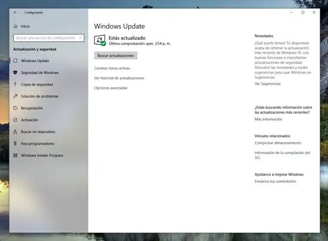
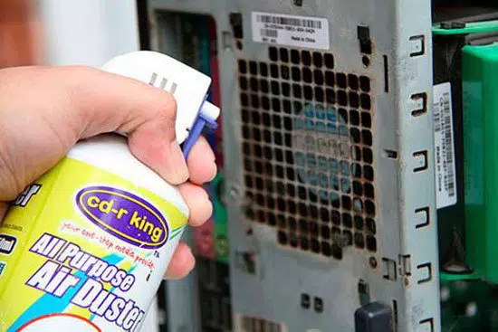
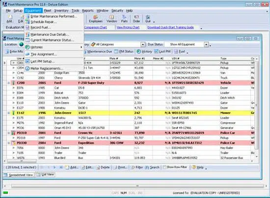
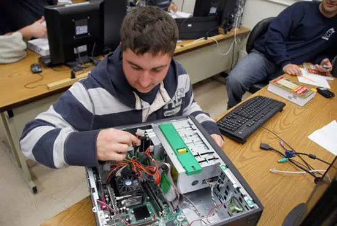
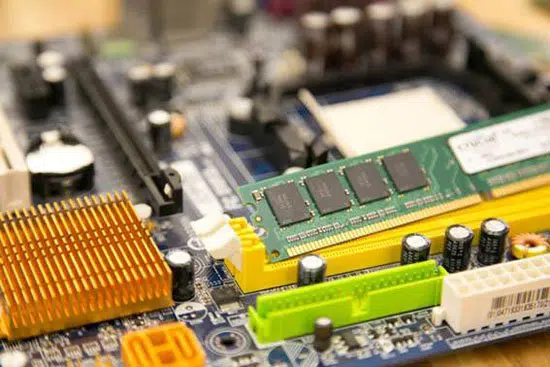

Todo Sobre Mantenimientos de Computadoras
Mantenimiento preventivo
Se podría definir al mantenimiento preventivo de una computadora como la necesidad de crear un ámbito de funcionamiento favorable para el computador, es decir la necesidad llevar a cabo una serie de actividades para que el equipo de cómputo se encuentre protegido ante cualquier problema.
Por ejemplo, la mayor parte de las computadoras suelen fallar debido a la acumulación de polvo sobre sus componentes o rejillas de ventilación. Es por ello que se hace evidente la necesidad de mantenerlo limpio, tanto por dentro como por fuera, como así también comprobar que todos sus periféricos, cables, adaptadores, estabilizadores y hardware se encuentren en excelentes condiciones de uso.
También en esta comprobación deberíamos incluir el software de la computadora, es decir si están actualizados a la última versión el sistema operativo, los programas de usuario y los controladores de dispositivos, ya que esto es de mucha importancia al momento de evitarnos peligros con malware y otros programas malintencionados.
Para llevar a cabo un buen mantenimiento preventivo de la computadora es necesario obtener algunas herramientas además de un poco de paciencia, ya que según la cantidad de tiempo que lleve una computadora sin mantenimiento, mayor será las condiciones de suciedad con la que nos encontraremos.
Como mencionamos, la suciedad es el mayor factor de fallas en una computadora, y en este punto debemos ser bien concienzudos, y hacer una buena limpieza del interior del equipo ya que el polvo, mezclado con las grasas y aceites presentes en el aire forman una peligrosa película que no dejará irradiar el calor generado por los componentes de la motherboard y los demás componentes como placas de audio, red o video, llevando a que estos se recalienten y eventualmente fallen debido a problemas en las soldaduras, o hasta incluso en los componentes electrónicos que la conforman.
Este mantenimiento preventivo de la computadora debe hacerse de manera regular, ya que esto nos permitirá prolongar la vida útil de la computadora, además de conseguir que ésta funcione siempre al máximo de su capacidad.
Los materiales y herramientas utilizados para llevar a cabo un buen mantenimiento preventivo de una computadora son simples, y las podemos conseguir en cualquier lado.
Estos son un destornillador estrella, un pincel no muy grande, una lata de aire comprimido, la cual no es imprescindible pero nos permitirá hacer el trabajo más rápido. Además necesitaremos unos paños de limpieza.
En cuanto a lo necesario para hacer un mantenimiento preventivo del software de la computadora, necesitaremos un disco extraíble, tarjetas de memoria o pendrives para hacer un backup de la información, es decir documentos y demás que almacena en su interior, las actualizaciones del sistema o de los programas de usuario, y por supuesto una conexión a Internet.
Mantenimiento correctivo
Básicamente, el mantenimiento correctivo de una computadora se realiza con el objetivo de solucionar los problemas que se suscitan con el uso del equipo, es decir reparar lo que se pueda haber averiado.
Este mantenimiento correctivo es la forma más simple de proporcionar reparación y mantenimiento a una computadora, ya que se realiza una vez que el equipo ha fallado, y por lo general implica el recambio de alguno de los componentes del hardware.
En este punto es necesario destacar que existen dos tipos de mantenimiento correctivo: El mantenimiento correctivo contingente y el mantenimiento correctivo programado.
El mantenimiento correctivo contingente, también llamado “No planificado”, es el mantenimiento que se lleva a cabo exactamente luego de que ocurra un fallo en la computadora, y que es necesario realizar ya que de otra manera no se puede utilizar.
Por otra parte, el mantenimiento correctivo programado es un tipo de mantenimiento que se realiza con el propósito de adelantarse a los posibles problemas que puede presentar el hardware de una computadora. Esto significa que el mantenimiento se realiza cambiando piezas de la PC, que de acuerdo a experiencias previas, se sabe que van a fallar en un determinado momento. Este tipo de mantenimiento, pese a ser caro en términos monetarios, permite tener una computadora en óptimo estado y siempre como nueva. También nos permite planificar el momento en que este mantenimiento se llevará a cabo, por lo que el equipo siempre puede estar disponible en los momentos en que se necesite.
Mantenimiento predictivo
El mantenimiento predictivo está estrechamente ligado al mantenimiento de tipo proactivo, y consiste básicamente es la detección temprana de fallas, es decir antes de que estas sucedan, lo que nos permite solucionar el posible problema sin las complicaciones de tener que hacerlo cuando la computadora está en pleno funcionamiento, ya que este tipo de mantenimiento podemos hacerlo de manera programada.
Para hacer este tipo de diagnósticos se utilizan herramientas de software como Maintenance Pro, que provee de una serie de características muy interesantes con las cuales seguir la evolución de las fallas de un equipo de computación.
Algunas de las ventajas del mantenimiento preventivo son la posibilidad de segur la evolución de un determinado problema, la optimización del tiempo de manteniendo, tanto para el personal como para los propios equipos, conocer estadísticas muy precisas de las fallas en los equipos y mucho más.
Mantenimiento proactivo
El llamado Mantenimiento Proactivo es una tipo de mantenimiento especializada en la identificación y solución de las causas que suscitan problemas en las computadoras. Esto significa que esta técnica está enfocada en encontrar la fuente de los problemas, no en los fallos que estos pueden provocar.
El mantenimiento proactivo se basa en el mantenimiento de tipo predictivos, pero a diferencia de este, en el mantenimiento proactivo es necesaria la participación del personal encargado del buen funcionamiento del equipamiento.
Para que el mantenimiento proactivo pueda ser viable, por supuesto es necesario que exista una excelente organización de los recursos con los que se dispone, además de una planificación exhaustiva de las tareas que se llevarán a cabo, con el objetivo de que el equipamiento de cómputo deba ser sacado de línea el menor tiempo posible, con lo que se pueden reducir los costes y otros beneficios asociados a no detener la producción.
Plan de mantenimiento de computadoras Básicamente, la necesidad de crear un plan de mantenimiento de computadoras es evitar que los equipos fallen debido a problemas técnicos encontrando y corrigiendo aquellos pequeños problemas antes de que se conviertan en fallas que deban ser analizadas y solucionadas por expertos del soporte técnico, lo que seguramente demandará pagar una factura.
Si no prestamos atención al mantenimiento de nuestras computadoras, lo más probable es que estos con el tiempo fallen debido a problemáticas asociadas con componentes sueltos, suciedad, humedad y otros muchos factores.
Es por ello que debe establecerse un plan de mantenimiento, lo cual es una de las mejores maneras existentes para asegurar el buen estado de nuestras computadoras y mantenerlas en un grado óptimo de funcionamiento. Este plan de mantenimiento de computadoras debe incluir tanto el mantenimiento preventivo como el correctivo. También es una parte importante del mismo el mantenimiento proactivo.
Cada cuando tiempo debemos someter a mantenimiento a un computador
El mantenimiento de una computadora no debe ser algo que se deba tomar a la ligera, debido fundamentalmente a que en la mayoría de los casos, como ya mencionamos, es la principal herramienta de producción. Es por ello que debemos ser muy estrictos en cada cuanto tiempo hacemos manteniendo de la computadora, siempre dependiendo del uso que se haga de la misma.
En el caso de computadoras que se utilizan en un horario laboral típico o más, es decir 8 horas todos los días de la semana, como equipos de computación de oficinas, cibercafés, industrias y demás, será necesario someter el equipo a mantenimiento por lo menos una vez al mes.
Si la computadora es utilizada en el ámbito hogareño, o una oficina pequeña, es decir que no se mantiene encendido siempre, con someterlo a mantenimiento cada seis meses bastará para mantenerlo en óptimas condiciones.
Si los equipos se utilizan esporádicamente, es decir que no se encienden regularmente, con hacerles un mantenimiento una vez por año bastará, ya que al no tener tanto uso, su interior se mantiene más limpio, y su hardware se desgasta menos.
Si tomamos en consideración los consejos que encontramos en este artículo, la buena salud y el óptimo funcionamiento de nuestras computadoras está garantizado por un buen tiempo, incluso mucho más allá de la fecha en que ya no serán modernos.